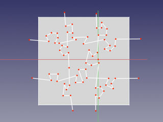
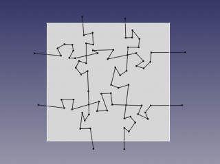
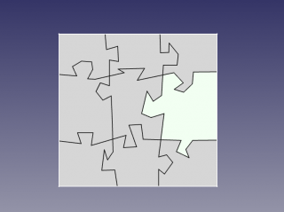
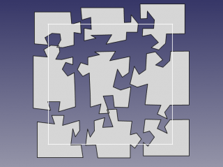

|
| Menu location |
|---|
| Part → Split → Slice |
| Workbenches |
| Part |
| Default shortcut |
| None |
| See also |
| Part Boolean Fragments, Part XOR, Join features, Part Booleans |
Description
Tool to split shapes by intersection with other shapes. For example, for a box and a plane, a compound of two solids is created.

(on the picture above, the pieces were moved apart manually afterwards, to reveal the slicing)
The output shape occupies the same space as the original. But it is split where it intersects with other shapes. The split pieces are put into a compound (or compsolid), so the object appears to remain in one piece. You need to explode the compound to get the individual pieces. Use, for example, Draft Downgrade for the purpose.
The tool has three modes: "Standard", "Split", and "CompSolid".
"Standard" and "Split" differ by the action of the tool on wires, shells and compsolids: if "Split", those are separated; if "Standard", they are kept together (get extra segments).
Compounding structure in "Standard" and "Split" modes follows the compounding structure of shape being sliced.
In "CompSolid" mode, the output is a compsolid (or a compound of compsolids, if the resulting solids form more than one island of connectedness). Compsolid is a set of solids connected by faces; they are related to solids like wires are related to edges, and shells are related to faces; the name is probably a shortened phrase "composite solid".
The overall action of the tool is very similar to Boolean Fragments, except only the pieces from the first shape are in the result.
How to use
- Select the object to be sliced, first, and then some objects to slice with.
The order of selection is important. Compounds with self-intersections are not allowed (self-intersections sometimes can be accounted for by passing the compound through BooleanFragments) - Invoke the Part Slice command.
A Slice parametric object is created. Original objects are hidden, and the result of intersection is shown in 3D view.
Properties
Slice
- DATABase: Object to be sliced.
- DATATools: List of objects to slice with. (as of FreeCAD v0.17.8053, this property is not displayed in property editor, and can only be accessed via Python).
- DATAMode: "Standard", "Split", or "CompSolid". "Split" is default. Standard and Split differ by the action of the tool on aggregation type shapes: if Split, those are separated; otherwise they are kept together (get extra segments).
- DATATolerance: "fuzziness" value. This is an extra tolerance to apply when searching for intersections, in addition to tolerances stored in the input shapes.
Example: making puzzle
- Switch to Sketcher Workbench, create an new sketch. Draw a rectangle that will outline the overall shape of the puzzle. Close the sketch.

- Switch to Part workbench. Select the sketch, and pick Part->Create face from sketch (in menu).
- Switch to Sketcher workbench, and create another sketch on the same plane. Using polyline tool, draw the lines that will split the puzzle into pieces.
 - Switch to Part workbench. Select the splitter sketch, and apply Part Boolean Fragments. This will insert vertices where lines of splitter sketch intersect. Having them is essential for the next step to work.
 - Select the rectangular face, and the BooleanFragments of splitter sketch, and apply Part Split.
 - Switch to Draft workbench, and apply Draft Downgrade to the result. You should get all the pieces as "Face00X" in document tree, that can be moved independently. Done!


{kind=link}
{kind=link}
{kind=link}
{kind=link}
{kind=link}
Scripting
The tool can by used in macros and from the python console by using the following function:
BOPTools.SplitFeatures.makeSlice(name)
- Creates an empty Slice feature. The 'Base' and 'Tools' properties must be assigned explicitly, afterwards.
- Returns the newly created object.
Slice can also be applied to plain shapes, without the need to have a document object, via:
Part.BOPTools.SplitAPI.slice(base_shape, tool_shapes, mode, tolerance = 0.0)
This can be useful for making custom Python scripted features.
Example:
import Part j = Part.BOPTools.SplitFeatures.makeSlice(name= 'Slice') j.Base = FreeCADGui.Selection.getSelection()[0] j.Tools = FreeCADGui.Selection.getSelection()[1:]
The tool itself is implemented in Python, see /Mod/Part/BOPTools/SplitFeatures.py under where FreeCAD is installed.
Version
The tool was introduced in FreeCAD v0.17.8053. FreeCAD needs to be compiled with OCC 6.9.0 or later; otherwise, the tool is unavailable.